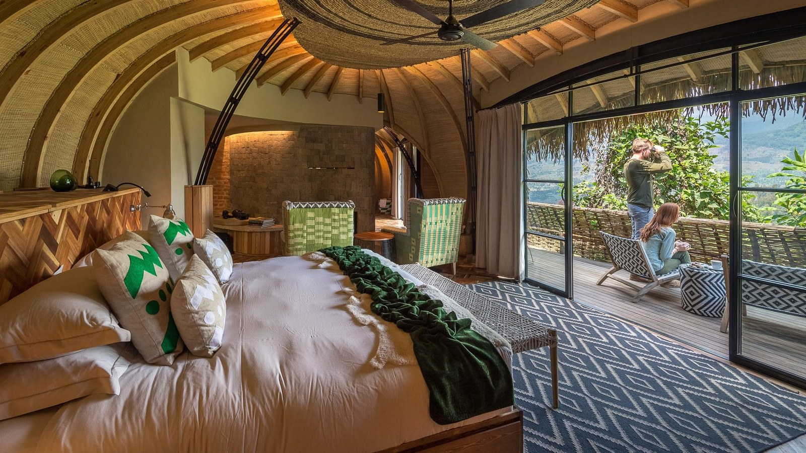

Photograph: Onyango George / EA Hospitality Pulse
Someone else is selling your lodge under your own name. The defences were built for other countries.
A report published on 9 October put 1.1 million brand-hijacking adverts against 204,000 hotels in 205 countries. East African properties are already on the pages those adverts lead to, and the three remedies working elsewhere are the three that travel worst.
Type the words Nairobi Serena Hotel into a search box and one of the pages you can reach is not the Nairobi Serena Hotel. It carries the hotel's name as its heading, the address on Kenyatta Avenue, fifty photographs of the property, a room list that runs from Deluxe to Presidential Suite, and a telephone number in large type at the top of the screen inviting you to call now. The number, (866) 238-4218, is a United States toll-free line. The page belongs to GuestReservations.com, which describes itself in small print at the foot of the screen as "an independent travel network offering over 100,000 hotels worldwide" and offers, behind a link, a notice headed Hotel Non-Affiliation. Checked on Sunday, the property page quoted no price at all, only a button marked Today's Low Rate. The company's Nairobi index page is less coy. It lists 91 Nairobi hotels, twenty-one of the first twenty-five with a nightly rate attached, from $110 at the Best Western Nairobi Upper Hill to $431 at the Serena.
This is not an obscure corner of the internet. On Thursday 9 October, PhocusWire published findings from a report by Operto, a hospitality technology company, which counted roughly 1.1 million adverts bidding on hotel brand names in a single thirty-one-day window, from 22 May to 21 June 2026, drawn from Google's own Ads Transparency Center. Those adverts targeted about 204,000 unique hotels across 205 countries. The average affected property faced 3.9 competing adverts on searches for its own name. In North America the figure was 6.6. Nine domains accounted for the whole count, and one of them, GuestReservations.com, accounted for roughly half of it on its own, some 540,000 adverts, with ReservationDesk.com next at about 240,000.
Tim Major, Operto's chief executive, is blunter than the data. "They're actually hijacking the hotel's name," he told PhocusWire. "And if you contact them, they also will say that they're the hotel." The economics are not the familiar commission argument. "Because they charge higher than the best available rate, they're actually getting a bigger commission in this arrangement too," Major said. On the question of who is responsible, his answer is a shrug with a sharp edge: "All parties will disavow they have anything to do with this group."
East African operators reading that may reasonably assume it is someone else's problem. It is not. GuestReservations maintains individual branded landing pages for the Masai Mara Sopa Lodge, the AA Lodge Masai Mara, the Sentrim Mara Lodge, the JW Marriott Masai Mara Lodge, the Nairobi Safari Club, the Kahama Hotel in Nairobi and a boutique property in Zanzibar, among others. The Sopa page, checked on Sunday, gave the location only as Olemtitia, Talek, with no street address, forty-eight photographs, the same American telephone number, no price, no cancellation terms and no disclosed fees. Its list of amenities still advertises acrylic shields and social distancing measures, which gives some sense of how often these pages are maintained.
Honesty requires a caveat here, and it is a real one. No published breakdown of the 204,000 affected hotels names a single East African country. The report's geography goes as far as the United States at 33 per cent, Italy at 6.2 per cent, then France, Spain and the United Kingdom, and stops. Nor has any Kenyan, Tanzanian or Ugandan operator yet gone on record about interception. What is established is narrower and still serious: the landing pages for East African properties exist, they are indexed, they are reachable from a brand search, and they are run by the single largest bidder in the dataset. Whether a Mara camp loses two bookings a year this way or twenty is not currently knowable from outside the camp.
What is knowable is that the three defences now being tested elsewhere are the three that transfer worst to this region.
The first is consumer law. In July, the San Francisco city attorney, David Chiu, filed suit in the Superior Court against Guest Reservations, Book Online and, significantly, Booking Holdings. The complaint describes the websites as "imitating authentic hotels and scamming travelers into paying significantly higher rates" and documents a room the hotel itself sold for $381 appearing at $595 on one reseller and $526 on the other, with mark-ups running as high as 85 per cent. The city is seeking refunds, an injunction and $2,500 for each violation. It is a strong case and it is a Californian one. A lodge in Narok county has no equivalent forum, and the guest who was overcharged is almost never a Kenyan consumer with standing in a Kenyan court. She is an American or a German who will take the matter to her card issuer, which is the one venue where the lodge becomes the defendant rather than the victim.
The second is the trademark complaint, and it is weaker than most operators believe. Google's policy has long distinguished between a trademark used inside an advert's text, which a brand owner can have removed, and a trademark used as the keyword that triggers the advert, which Google does not generally restrict. Since July 2023 the company has also processed complaints only against specific advertisers and specific adverts rather than across a whole industry, which means each removal is a single removal. Major's description of the result is the most quoted line in his report for a reason. "We play Whac-A-Mole against them." Hoteliers who report an advert see it taken down and a new one appear within days, often from a fresh advertiser account. A registered Kenyan trademark gets the name out of the advertising copy. It does not get the name out of the auction.
The third defence is the only one that reliably works, and it is the one that costs money. A property that bids on its own name occupies the top of its own branded results and pushes the imitators down the page. Operto's case studies show what that is worth: at the Alaska Frontier Inn, predatory presence at the top of branded results fell by 95 per cent and direct bookings rose from 25 to 38 per cent in five months. The general manager, Evan Gorman, framed the loss in terms that will be familiar to anyone who has taken a furious call from a guest at the gate. "Not only were the OTAs costing us in revenue, but also reputation." But paying to defend your own name is a dollar expense charged against a shilling or a Tanzanian shilling cost base, bid against counterparties funded by mark-ups the report puts at 30 to 50 per cent at checkout. The margin asymmetry is the whole game, and it runs the wrong way for an independent camp.
There is a fourth element, and it is the one that should change how an East African general manager reads their own contracts. The San Francisco complaint does not merely allege that the imitator sites behaved badly. It alleges that Booking Holdings supplied the room inventory and the payment rails that allowed those sites to complete bookings, and earned on each one. Booking Holdings is expected to contest that characterisation, and nothing has been proven. But the allegation, if it holds, describes a closed loop in which a lodge's own distribution agreement is the pipe through which its brand is resold against it. That is a question to put to a market manager in plain language: who may resell this allotment, under what name, and with what disclosure.
The last point is the one that no dataset captures, because the people who keep the datasets live in cities. Operto reviewed 232 complaints filed against GuestReservations.com with the United States Better Business Bureau between July 2023 and May 2026, out of more than 1,089 on file. Forty-six per cent concerned cancellation policies the complainant considered deceptive or false. Thirty-eight per cent said they believed they had booked directly with the hotel. Thirty-four per cent cited hidden fees. Five per cent arrived at the property to find no record of their reservation at all.
Five per cent is a small number in Chicago, where the guest walks to the hotel next door. It is not a small number at a tented camp an hour's drive beyond Talek, reached by a scheduled flight that lands once a day, in high season, when there is no other bed within sixty kilometres. The cancellation finding compounds it: East African lodge terms are long and deposits are large, by necessity, because the fixed cost of holding a tent empty in the Mara is brutal. A guest who believes she bought a flexible rate from the lodge, and who is holding a confirmation that carries the lodge's name and photographs, is not going to accept a seventy-two-hour deadline she never agreed to. The lodge will lose that argument whether or not it was ever a party to the sale.
The practical response this week is cheap and unglamorous. Search your own property's name, in an incognito window, from a browser located in your largest source market rather than from Nairobi, and write down every advertiser above your own website. Click through to each landing page and note whose telephone number appears and whether a non-affiliation notice is visible without hunting for it. Decide deliberately, with a number attached, whether to bid on your own brand, rather than discovering the cost of not bidding through a chargeback. Read the resale and sub-distribution clauses in every wholesale and online agency contract you hold, and ask who is permitted to advertise under your name. Brief reception and the gate on what to do when a guest arrives holding a confirmation that does not exist in your system, because the answer cannot be improvised at eight in the evening.
One more caution, aimed at the evidence rather than the problem. The headline numbers in this story come from a company that sells the remedy. Operto's research is specific, methodologically described and sourced to Google's own transparency archive, which is more than most vendor research offers, and the San Francisco complaint and the Better Business Bureau file are independent of it. But the figures on interception rates, five to twenty-five per cent of bookings, and on nine imitators bidding per hotel, are drawn from Operto's own customer base, which is by definition composed of hotels that had noticed a problem. Nobody has replicated the count. Treat the direction as established and the magnitude as unsettled.
Kenya recorded about 2.7 million international arrivals in 2025, up from 2.47 million the year before, with earnings of roughly half a trillion shillings, according to figures from the Ministry of Tourism and Wildlife. Africa supplied 47 per cent of those arrivals, Europe 25 per cent and the Americas 14 per cent. The region has spent a decade building brands that a traveller in Hamburg or Houston will search for by name. That search is now an auction, held in a currency the lodge does not earn, under rules written in jurisdictions where it cannot sue, and the asset being auctioned is the name over its own gate.
📣 Telegram 💬 WhatsApp 💼 LinkedIn 📚 All guides